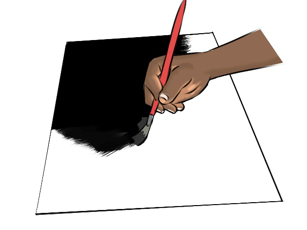
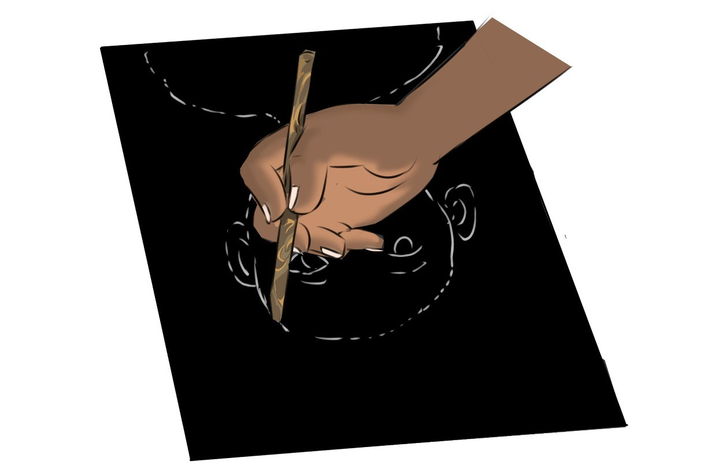

Apply a thin and even layer of ink or paint directly on the surface of the plate. Avoid using too much paint, as it may smudge the print. You can use brayers, brushes, or other tools to spread the ink evenly across the plate. Figure 4.6 shows ink application on a plate.

Image creation:
Once the ink is on the plate, use various techniques to transfer the designed image to the inked plate. You can draw with a stylus, use stencils, place objects on the inked surface, or even paint directly onto the plate. Figure 4.7 shows the image creation process on the inked plate.
